8. Force-field models¶
8.1. Introduction¶
Once the system is defined (see Representation of a molecular system), one can continue with the specification of the force field model. The simplest way to create a force-field is as follows:
ff = ForceField.generate(system, 'parameters.txt')
where the file parameters.txt contains all force field parameters. See Force field parameter file format for a detailed description of the file format. Additional technical parameters that determine the behavior of the force field, such as the real-space cutoff, the verlet skin, and so on, may be specified as keyword arguments in the generate method. See yaff.pes.ff.ForceField.generate() for a detailed description of the generate method.
Once an ff object is created, it can be used to evaluate the energy (and optionally the forces and/or the virial tensor) for a given set of Cartesian coordinates and/or cell parameters:
# change the atomic positions and cell parameters
ff.update_pos(new_pos)
ff.update_rvecs(new_rvecs)
# compute the energy
new_energy = ff.compute()
One may also allocate arrays to store the derivative of the energy towards the atomic positions and uniform deformations of the system:
# allocate arrays for the Cartesian gradient of the energy and the virial
# tensor.
gpos = np.zeros(system.pos.shape, float)
vtens = np.zeros((3,3), float)
# change the atomic positions and cell parameters
ff.update_pos(new_pos)
ff.update_rvecs(new_rvecs)
# compute the energy
new_energy = ff.compute(gpos, vtens)
This will take a little more CPU time because the presence of the optional arguments implies that a large number of partial derivatives must be computed.
After the compute method is called, one can obtain many intermediate results by accessing attributes of the ff object. Some examples:
print ff.part_pair_ei.energy/kjmol
print ff.part_valence.gpos
print ff.part_ewald_cor.vtens
Depending on the system and the contents of the file parameters.txt some part_* attributes may not be present. All parts are also accessible through the list ff.parts.
Instead of using the ForceField.generate method, one may also construct all the parts of the force field manually. However, this can become very tedious. This is a simple example of a Lennard-Jones force field:
system = System(
numbers=np.array([18]*10),
pos=np.random.uniform(0, 10*angstrom, (10,3)),
ffatypes=['Ar']*10,
bonds=None,
rvecs=np.identity(3)*10*angstrom,
)
sigmas = np.array([3.98e-4]*10),
epsilons = np.array([6.32]*10),
pair_pot_lj = PairPotLJ(sigmas, epsilons, rcut=15*angstrom, smooth=True)
nlists = NeighborLists(system)
scalings = Scalings(system.topology)
part_pair_lj = ForcePartPair(system, nlists, scalings, pair_pot_lj)
ff = ForceField(system, [part_pair_lj], nlists)
8.2. Force field parameter file format¶
The force field parameter file has a case-insensitive line-based format. The order of the lines is not relevant when Yaff processes the file. Nevertheless, for the sake of human readability, it is best to follow some logical ordering. Comments start with a pound sign (#) and reach until the end of the line. These comments and empty lines are ignored when processing the parameter file.
Each (non-empty) line has the following format:
PREFIX:COMMAND DATA
where PREFIX and COMMAND do not contain white spaces and DATA may consist of multiple words and/or numbers. Each prefix corresponds to a certain type of energy term. Each command for a given prefix configures certain properties and parameters for that type of energy terms.
When a PREFIX is present in a parameter file, all known commands for that prefix must be included. Some commands may repeat. This imposes a complete definition of a type of energy term without implicit default settings. This requirement guarantees that the parameter file is self-explaining.
All possible prefixes and corresponding commands are documented in the following subsections. Some commands have comparable behavior for different prefixes and are therefore document in a separate subsection, General commands.
8.2.1. Prefix – BONDHARM¶
Energy term:
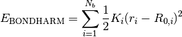
Parameters:
- 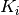 (K): the force constant parameter of bond
 .
. - 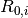 (R0): the rest value parameter of bond .
Constants:
- 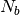: the number of bonds.
Geometry dependent variables:
- 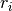: the length of bond .
Commands:
- UNIT (may repeat): Specify the units of the parameters K and R0. See General commands.
- PARS (may repeat): Specify parameters for a given combination of atom types. (Bonds are defined in the System instance.) Four data fields must be given: ffatype0, ffatype1, K and R0.
Example:
BONDHARM:UNIT K kjmol/angstrom**2
BONDHARM:UNIT R0 angstrom
BONDHARM:PARS O H 4.0088096730e+03 1.0238240000e+00
8.2.2. Prefix – BONDFUES¶
Energy term:
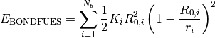
Parameters:
- (K): the force constant parameter of bond .
- (R0): the rest value parameter of bond .
Constants:
- : the number of bonds.
Geometry dependent variables:
- : the length of bond .
Commands:
- UNIT (may repeat): Specify the units of the parameters K and R0. See General commands.
- PARS (may repeat): Specify parameters for a given combination of atom types. (Bonds are defined in the System instance.) Four data fields must be given: ffatype0, ffatype1, K and R0.
Example:
BONDFUES:UNIT K kjmol/angstrom**2
BONDFUES:UNIT R0 angstrom
BONDFUES:PARS O H 4.0088096730e+03 1.0238240000e+00
8.2.3. Prefix – BENDAHARM¶
Energy term:
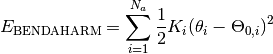
Parameters:
- (K): the force constant parameter of bend .
- 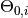 (THETA0): the angle rest value parameter of bend .
Constants:
- 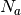: the number of bending angles.
Geometry dependent variables:
- 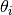: the angle of bend .
Commands:
- UNIT (may repeat): Specify the units of the parameters K and THETA0. See General commands.
- PARS (may repeat): Specify parameters for a given combination of atom types. Five data fields must be given: ffatype0, ffatype1, ffatype2, K and THETA0.
Example:
BENDAHARM:UNIT K kjmol/rad**2
BENDAHARM:UNIT THETA0 deg
BENDAHARM:PARS H O H 3.0230353700e+02 8.8401698835e+01
8.2.4. Prefix – BENDCHARM¶
Energy term:
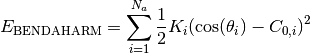
Parameters:
- (K): the force constant parameter of bend .
- 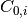 (COS0): the cosine rest value parameter of bend .
Constants:
- : the number of bending angles.
Geometry dependent variables:
- 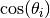: the cosine of the angle of bend .
Commands:
- UNIT (may repeat): Specify the units of the parameters K and COS0. See General commands.
- PARS (may repeat): Specify parameters for a given combination of atom types. Five data fields must be given: ffatype0, ffatype1, ffatype2, K and COS0.
Example:
BENDCHARM:UNIT K kjmol
BENDCHARM:UNIT COS0 1
BENDCHARM:PARS H O H 3.0230353700e+02 2.7892000007e-02
8.2.5. Prefix – UBHARM¶
Energy term:
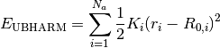
Parameters:
- (K): the force constant parameter of the Urey-Bradley term .
- (R0): the rest value parameter of the Urey-Bradley term .
Constants:
- : the number of bending angles.
Geometry dependent variables:
- : the distance between the two outermost atoms in bending angle .
Commands:
- UNIT (may repeat): Specify the units of the parameters K and R0. See General commands.
- PARS (may repeat): Specify parameters for a given combination of atom types. Five data fields must be given: ffatype0, ffatype1, ffatype2, K and R0.
Example:
UBHARM:UNIT K kjmol/A**2
UBHARM:UNIT R0 A
UBHARM:PARS H O H 2.5465456475e+02 2.6123213151e+00
8.2.6. Prefix – TORSION¶
Energy term:

Parameters:
- 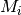 (M): The multiplicity of the torsional potential.
 (A): The amplitude of torsional barrier .
(A): The amplitude of torsional barrier .- 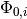 (PHI0): The location of the (or a) minimum in the torsional potential .
Constants:
- 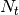: the number of torsional terms.
Geometry dependent variables:
- 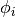: the dihedral angle of torsional term .
Commands:
- UNIT (may repeat): Specify the units of the parameters K, M and PHI0. See General commands.
- PARS (may repeat): Specify parameters for a given combination of atom types. Seven data fields must be given: ffatype0, ffatype1, ffatype2, ffatype3, M, A and PHI0.
Example:
TORSION:UNIT A kjmol
TORSION:UNIT PHI0 deg
TORSION:PARS H N C H 3 4.0801759881e+00 1.8000000000e+02
TORSION:PARS H N C H 1 4.0801759881e+01 1.8000000000e+02
TORSION:PARS H O C C 1 5.6235012389e+01 1.8000000000e+02
TORSION:PARS O C C N 2 4.5335291185e+00 0.0000000000e+00
8.2.7. Prefix – INVERSION¶
Energy term:
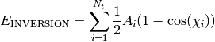
Parameters:
- (A): The amplitude of inversion barrier .
Constants:
- : the number of inversion terms.
Geometry dependent variables:
- 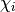: the out-of-plane angle between the plane spanned by atoms 1,2,4 and the bond between atoms 3 and 4.
Commands:
- UNIT (may repeat): Specify the units of the parameter A. See General commands.
- PARS (may repeat): Specify parameters for a given combination of atom types. Five data fields must be given: ffatype0, ffatype1, ffatype2, ffatype3 and A.
Example:
OOPCOS:UNIT A kjmol
OOPCOS:PARS H H O C 1.0
OOPCOS:PARS H O H C 1.0
8.2.8. Prefix – BONDCROSS¶
Energy term:
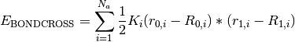
Parameters:
- (K): the off-diagonal force constant of cross term .
- (R0): the rest value parameter for the first bond in angle .
- (R1): the rest value parameter for the second bond in angle .
Constants:
- : the number of bending angles.
Geometry dependent variables:
- 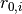: the first bond length in angle .
- 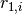: the second bond length in angle .
Commands:
- UNIT (may repeat): Specify the units of the parameters K, R0 and R1. See General commands.
- PARS (may repeat): Specify parameters for a given combination of atom types. Six data fields must be given: ffatype0, ffatype1, ffatype2, K, R0 and R1.
Example:
BONDCROSS:UNIT K kjmol/angstrom**2
BONDCROSS:UNIT R0 angstrom
BONDCROSS:UNIT R1 angstrom
BONDCROSS:PARS H O H 1.1354652314e+01 1.1247753211e+00 1.1247753211e+00
Note:
In the case of symmetric angles, i.e. with the same ffatypes for the outermost angles, R0 has to be equal to R1. When the outermost ffatypes are different, R0 corresponds to the bond between ffatype0 and ffatype1 and R1 corresponds to the bond between ffatype1 and ffatype2.
8.2.9. Prefix – LJ¶
Description: the traditional Lennard-Jones potential.
Energy term:
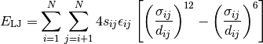
with

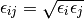
Parameters:
- (SIGMA): the (finite) distance at which the energy becomes zero (for a pair of atoms of the same type).
- 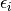 (EPSILON): the depth of the energy minimum (for a pair of atoms of the same type).
Constants:
- 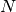: the number of atoms.
- 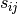: the scaling of the interaction between atoms and
 .
.
Geometry dependent variables:
- 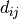: the distance between atoms and .
Commands:
- UNIT (may repeat): Specify the units of the parameters SIGMA and EPSILON. See General commands.
- SCALE (may repeat): Specify the scaling of short-ranged interactions. See General commands.
- PARS (may repeat): Specify parameters for a given atom type. Three data fields must be given: ffatype, SIGMA and EPSILON.
Example:
# Lennard-Jones parameters for the CHARMM TIP3P variant
LJ:UNIT SIGMA angstrom
LJ:UNIT EPSILON kcalmol
LJ:SCALE 1 0.0
LJ:SCALE 2 0.0
LJ:SCALE 3 1.0
LJ:PARS O 3.15 0.1521
LJ:PARS H 0.4 0.046
8.2.10. Prefix – MM3¶
Description: the MM3 variant of the Lennard-Jones potential.
Energy:
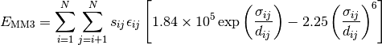
with
Parameters:
- (EPSILON): the depth of the energy minimum (for a pair of atoms of the same type).
- (SIGMA): the (finite) distance at which the energy becomes zero (for a pair of atoms of the same type).
Constants:
- : the number of atoms.
- : the scaling of the interaction between atoms and .
Geometry dependent variables:
- : the distance between atoms and .
Commands:
- UNIT (may repeat): Specify the units of the parameters EPSILON and SIGMA. See General commands.
- SCALE (may repeat): Specify the scaling of short-ranged interactions. See General commands.
- PARS (may repeat): Specify parameters for a given atom type. Four data fields must be given: ffatype, EPSILON, SIGMA and ONLYPAULI. The last data field corresponds to an undocumented feature. Set it to 0 to get the original MM3 form.
Example:
MM3:UNIT SIGMA angstrom
MM3:UNIT EPSILON kcalmol
MM3:SCALE 1 0.0
MM3:SCALE 2 0.0
MM3:SCALE 3 1.0
MM3:PARS O 1.7 0.12 1
MM3:PARS H 0.2 0.04 0
8.2.11. Prefix – EXPREP¶
Description: an exponential repulsion term.
Energy:
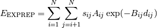
The pair parameters can be provided explicitly, or can be derived from atomic parameters using two possible mixing rules for each parameter:
- GEOMETRIC mixing for 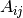: 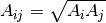
- GEOMETRIC_COR mixing for : 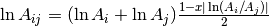 where
 is a configurable parameter
is a configurable parameter - ARITHMETIC mixing for 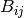: 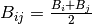
- ARITHMETIC_COR mixing for : 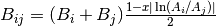 where is a configurable parameter
Parameters:
- or (A): the amplitude of the exponential repulsion.
- 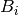 or 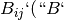): the decay of the exponential repulsion.
Constants:
- : the number of atoms.
- : the scaling of the interaction between atoms and .
Geometry dependent variables:
- : the distance between atoms and .
Commands:
- UNIT (may repeat): Specify the units of the parameters A and B. See General commands.
- SCALE (may repeat): Specify the scaling of short-ranged interactions. See General commands.
- PARS (may repeat): Specify parameters for a given atom type. Three data fields must be given: ffatype, A and B.
- CPARS (may repeat): Specify parameters for a given combination of atom types. This overrides parameters derived from mixing rules. Four data fields must be given: ffatype0, ffatype1, A and B.
Example:
EXPREP:UNIT A au
EXPREP:UNIT B 1/angstrom
EXPREP:SCALE 1 0.0
EXPREP:SCALE 2 1.0
EXPREP:SCALE 3 1.0
EXPREP:MIX A GEOMETRIC
EXPREP:MIX B ARITHMETIC
EXPREP:PARS O 4.2117588157e+02 4.4654231357e+00
EXPREP:PARS N 4.9873214987e+00 4.4265465464e+00
EXPREP:PARS C 4.3843216584e+02 4.4132795167e+00
EXPREP:PARS H 2.9875648798e+00 4.4371927495e+00
8.2.12. Prefix – DAMPDISP¶
Description: a dispersion term with optional Tang-Toennies damping.
Energy:
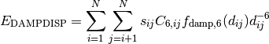
where the damping factor 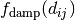 is optional. When used it has the Tang-Toennies form:
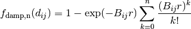
The pair parameters 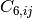 and are derived from atomic parameters using mixing rules, unless they are provided explicitly for a given pair of atom types. These are the mixing rules:
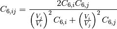
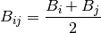
Parameters:
- or 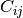 (C): the strength of the dispersion interaction.
- or (B): the decay of the damping function. When this parameter is zero, the damping is not applied.
- 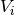 (VOL): the atomic volume parameter used in the mixing rule for the .
Constants:
- : the number of atoms.
- : the scaling of the interaction between atoms and .
Geometry dependent variables:
- : the distance between atoms and .
Commands:
- UNIT (may repeat): Specify the units of the parameters C6, B and VOL. See General commands.
- SCALE (may repeat): Specify the scaling of short-ranged interactions. See General commands.
- PARS (may repeat): Specify parameters for a given atom type. Four data fields must be given: ffatype, C6, B and VOL.
- CPARS (may repeat): Specify parameters for a given combination of atom types. This overrides parameters derived from mixing rules. Four data fields must be given: ffatype0, ffatype1, C6 and B.
Example:
DAMPDISP:UNIT C6 au
DAMPDISP:UNIT B 1/angstrom
DAMPDISP:UNIT VOL au
DAMPDISP:SCALE 1 1.0
DAMPDISP:SCALE 2 1.0
DAMPDISP:SCALE 3 1.0
DAMPDISP:PARS H 2.4261074778e+00 3.13071058512e+00 5.3061016452e+00
DAMPDISP:PARS C 2.5121581791e+01 5.01673173654e+00 3.7957349423e+00
DAMPDISP:PARS N 2.0121581791e+01 5.13207980365e+00 3.6001863542e+00
DAMPDISP:PARS O 1.4633211522e+01 5.74321564987e+00 2.7513028856e+00
8.2.13. Prefix – FIXQ¶
Description: Electrostatic interactions with constant atomic point charges.
Energy:
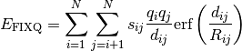
with 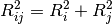. When 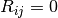, this simplifies to the familiar expression for point charges:
The charges are derived from so-called pre-charges () and bond charge increments () as follows:
where the summation is limited to atoms that are bonded to atom
. The parameter represents the amount of charge
transfered from atom to . Hence
. The pre-charge is the charge on an atom when
it is not bonded to any other atom. From a physical perspective, the pre-charge
should always be integer, which would also impose integer charges on molecules.
However, one is free to follow other conventions for the sake of convenience.
The charge density for a charge with radius
is given by the Gaussian distribution:
When , the distribution becomes a point charge:
Parameters:
- (Q0): the pre-charge
 (P): the bond charge increment
(P): the bond charge increment (R): the charge radius
(R): the charge radius
Constants:
- : the number of atoms.
- : the scaling of the interaction between atoms and .
Geometry dependent variables:
- : the distance between atoms and .
Commands:
- UNIT (may repeat): Specify the units of the parameters Q0, P and R. See General commands.
- SCALE (may repeat): Specify the scaling of short-ranged interactions. See General commands.
- DIELECTRIC: Specify scalar relative permittivity, must be at least 1.0.
- ATOM (may repeat): Specify the pre-charge and radius for a given atom type. Three data fields must be given: ffatype, Q0, R.
- BOND (may repeat): Specify a bond charge increment for a given combination of atom types. Three data fields must be given: ffatype0, ffatype1 and P.
Example:
FIXQ:UNIT Q0 e
FIXQ:UNIT P e
FIXQ:UNIT R angstrom
FIXQ:SCALE 1 0.0
FIXQ:SCALE 2 0.0
FIXQ:SCALE 3 1.0
FIXQ:DIELECTRIC 1.0
FIXQ:ATOM O 0.0000000000e+00 1.5000000000e-00
FIXQ:ATOM H 0.0000000000e+00 1.2000000000e-00
FIXQ:BOND H O 0.417
8.2.14. General commands¶
UNIT
The UNIT command is used to specify the units of the parameters given in the parameter file. The format is as follows:
PREFIX:UNIT PARAMETER_NAME UNIT_NAME
where PARAMETER_NAME refers to one of the parameters discussed above, e.g. K, R0, etc. The UNIT_NAME may be any mathematical expression involving the following constants: coulomb, kilogram, gram, miligram, unified, meter, centimeter, milimeter, micrometer, nanometer, angstrom, picometer, liter, joule, calorie, electronvolt, newton, second, hertz, nanosecond, femtosecond, picosecond, pascal, e.
A unit must be specified for each parameter. There are no default units. This convention is introduced to make sure that there can be no confusion about the units of the parameters.
SCALE
The SCALE command is used to determine how pairwise interactions are scaled for atoms that are involved in bond, bend or torsion terms. The command adheres to the following format:
PREFIX:SCALE N FACTOR
where N is 1, 2 or 3 and represents the number bonds between two atoms to which the scaling of the pairwise interaction is applied. 1 is for bonded atoms, 2 applies to atoms separated by two bonds and 3 is used for atoms separated by three bonds. The FACTOR determines the amount of scaling and must lie in the range [0.0,1.0]. When set to zero, the pairwise term is completely disabled.
8.3. Example force field file¶
The following is an example for a reasonable non-polarizable water FF. The parameters were generated with an old beta version of our in-house parameter calibration software. Don’t expect it to be a great water model!
# BEGIN SCOPE WATER
# Bond stretch
# ============
# Mathematical form depends on the kind selected below. Few kinds are supported:
# - BONDHARM: 0.5*K*(r-R0)**2
# - BONDFUES: 0.5*K*R0**2*(1+(R0/r)*((R0/r)-2.0))
# The actual parameters and their units may depend on the kind.
BONDFUES:UNIT K kjmol/angstrom**2
BONDFUES:UNIT R0 angstrom
# -----------------------------------------------------------------
# KEY label0 label1 K R0
# -----------------------------------------------------------------
BONDFUES:PARS O H 4.0088096730e+03 1.0238240000e+00
# Angle bending
# =============
# Mathematical form depends on the kind selected below. Few kinds are supported:
# - BENDAHARM: 0.5*K*(theta-THETA0)**2
# - BENDCHARM: 0.5*K*(cos(theta)-cos(COS0))**2
# The actual parameters and their units may depend on the kind.
BENDCHARM:UNIT K kjmol
BENDCHARM:UNIT COS0 1
# ---------------------------------------------------------------------------
# KEY label0 label1 label2 K THETA0/COS0
# ---------------------------------------------------------------------------
BENDCHARM:PARS H O H 3.0230353700e+02 2.7892000007e-02
# Fixed charges
# =============
# Mathematical form: q_A = q_0A + sum'_B p_BA
# where q0_A is the reference charge of atom A. It is mostly zero, sometimes a
# non-zero integer. The total charge of a fragment is the sum of all reference
# charges. The parameter p_BA is the charge transfered from B to A. Such charge
# transfers are only carried out over bonds in the FF topology.
# The charge on an atom is modeled as a Gaussian distribution. The spread on the
# Gaussian is called the radius R. When the radius is set to zero, point charges
# will be used instead of smeared charges.
FIXQ:UNIT Q0 e
FIXQ:UNIT P e
FIXQ:UNIT R angstrom
FIXQ:SCALE 1 1.0
FIXQ:SCALE 2 1.0
FIXQ:SCALE 3 1.0
FIXQ:DIELECTRIC 1.0
# ----------------------------------------------------
# KEY label Q_0A R_A
# ----------------------------------------------------
FIXQ:ATOM O 0.0000000000e+00 0.0000000000e-00
FIXQ:ATOM H 0.0000000000e+00 0.0000000000e-00
# -------------------------------------------
# KEY label0 label1 P_AB
# -------------------------------------------
FIXQ:BOND H O 3.6841957737e-01
# Damped Dispersion
# =================
# Mathematical form:
# C6_AB*f(r)*r**-6
# where C is a constant and f(r) is the Tang-Toennies damping factor
# f(r) = 1 - exp(-B_AB*r)*sum_k=0..6((B_AB*r)**k/k!)
DAMPDISP:UNIT C6 au
DAMPDISP:UNIT B 1/angstrom
DAMPDISP:UNIT VOL au
DAMPDISP:SCALE 1 1.0
DAMPDISP:SCALE 2 1.0
DAMPDISP:SCALE 3 1.0
# The pair parameters C6AB and R0AB are derived from atomic parameters using
# the following mixing rules:
# C6_AB = 2*C6_AA*C6_BB/((VOL_B/VOL_A)**2*C6_AA+(VOL_A/VOL_B)**2*C6_BB)
# B_AB = 0.5*(B_AA+B_BB)
# where
# C6_AA = homonuclear dispersion coefficient
# VOL_A = atomic volume
# VOL_A**2 = proportional to atomic polarizability
# B_AA = -0.33*(2*R_VDWA)+4.339
# R_VDWA = (conventional) vdw radius of atom A
# Idea taken from JCP v132, p234109, y2010.
# Mixing rules are commented out because they are the only available option:
##DAMPDISP:MIX C6 LONDON_VOLUME
##DAMPDISP:MIX B ARITHMETIC
# ---------------------------------------------------------------------------
# KEY label C6_AA B_AA VOL_A
# ---------------------------------------------------------------------------
DAMPDISP:PARS O 1.9550248340e+01 3.2421589363e+00 3.13071058512e+00
DAMPDISP:PARS H 2.7982205915e+00 3.4581667399e+00 5.13207980365e+00
# Exponential Repulsion
# =====================
# Mathematical form: A_AB*exp(-B_AB*r)
EXPREP:UNIT A au # Hartree, internal unit
EXPREP:UNIT B 1/angstrom
EXPREP:SCALE 1 0.0
EXPREP:SCALE 2 1.0
EXPREP:SCALE 3 1.0
# The parameters below were derived using the frozen density approximation
# applied to Hirshfeld-E AIM densities. The mixing rules are determined
# empirically: A mixes more or less geometrically, B mixes more or less
# arithmetically. When the A parameters of both atoms differ a lot, the simple
# mixing rules overestimate the actual values. The following empirical mixing
# rules compensate for the overestimation:
# ln(A_AB) = 0.5*(ln(A_AA) + ln(A_BB))*(1-x_A*abs(ln(A_AA/A_BB)))
# B_AB = 0.5*(B_AA + B_BB)*(1-x_B*abs(ln(A_AA/A_BB)))
# with
# x_A = 2.385e-2
# x_B = 7.897e-3
#EXPREP:MIX A GEOMETRIC
EXPREP:MIX A GEOMETRIC_COR 2.385e-2
#EXPREP:MIX B ARITHMETIC
EXPREP:MIX B ARITHMETIC_COR 7.897e-3
# -----------------------------------------------------
# KEY label A_AA B_AA
# -----------------------------------------------------
EXPREP:PARS O 4.2117588157e+02 4.4661933834e+00
EXPREP:PARS H 2.3514195495e+00 4.4107388814e+00
# -----------------------------------------------------
# END SCOPE WATER
8.4. Beyond force field parameter files¶
One does not have to use parameter files to construct force fields. It is also possible to construct them with some Python code, which can be useful in some corner cases.
The larger part of the force field parts in Yaff are not aware of the actual atom types. EXPREP and DAMPDISP are the only exceptions. This means that one may construct a force field in which every bond has different parameters, irrespective of the atom types involved. The following simple example illustrates this by creating an unphysical model for water, were the bond lengths of the two O-H bonds differ:
# A system object for a single water molecule
system = System(
numbers=np.array([8, 1, 1]),
pos=np.array([[-4.583, 5.333, 1.560], [-3.777, 5.331, 0.943],
[-5.081, 4.589, 1.176]])*angstrom,
ffatypes=['O', 'H', 'H'],
bonds=np.array([[0, 1], [0, 2]]),
)
# A valence force field with only two harmonic bond terms, which have
# different rest value parameters.
part = ForcePartValence(system)
part.add_term(Harmonic(fc=1.0, rv=1.0*angstrom, Bond(0, 1)))
part.add_term(Harmonic(fc=1.0, rv=1.1*angstrom, Bond(0, 2)))
ff = ForceField(system, [part])
Modifying or constructing force fields at this level of detail may be useful in the following cases:
When one wants to perform restrained molecular dynamics simulations, this approach allows one to add a restraint term. The following example assumes that a valence_part is already present after the force field is created with a parameter file:
ff = ForceField(system, 'parameters.txt') ff.part_valence.add_term(Harmonic(fc=0.3, rv=2.1*angstrom, Bond(15, 23)))
One may also derive a force field without paying attention to transferability of parameters, e.g. when a force field is designed for one specific molecule. In that case, each bond, bend, etc. may have different parameters (except for symmetry considerations). This is similar to the elastic network models in coarse-grained protein simulations.
In some cases, one is interested in constructing a molecular system with certain geometric prescriptions. Building such a structure from scratch can be very difficult for complex systems. One may design a non-physical force field such that the optimal geometry satisfies the geometrical criteria.
Several combinations of internal coordinates and valence energy terms are not supported through the parameter file, simply because they are uncommon. The above example shows how one can program any combination of internal coordinate and valence energy term in the force field.